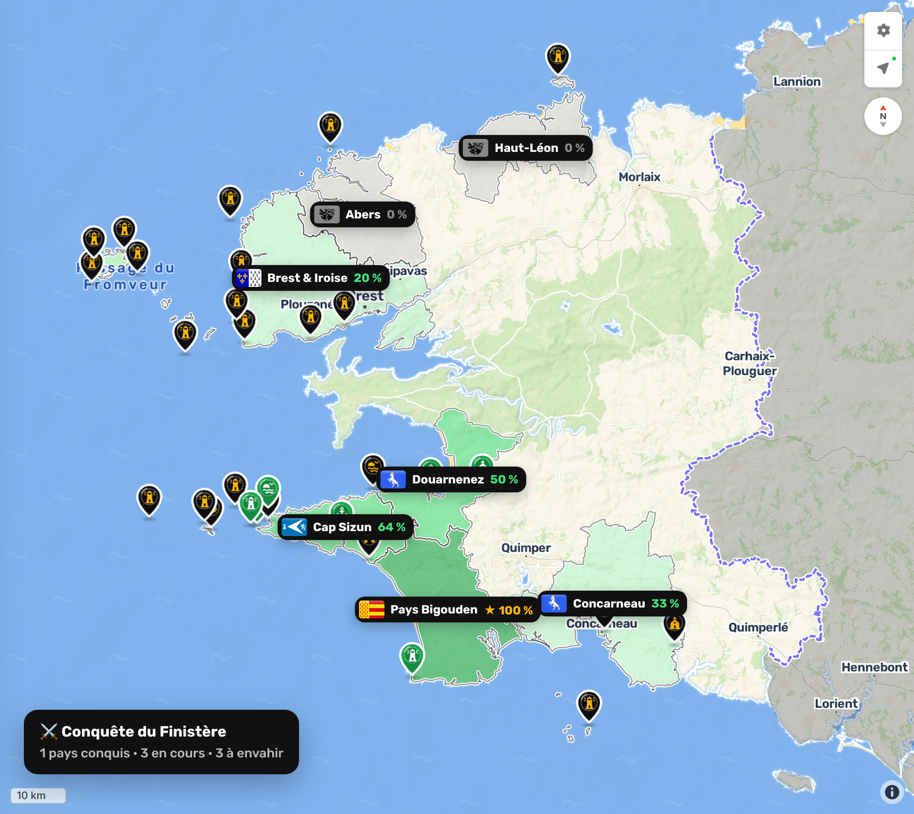
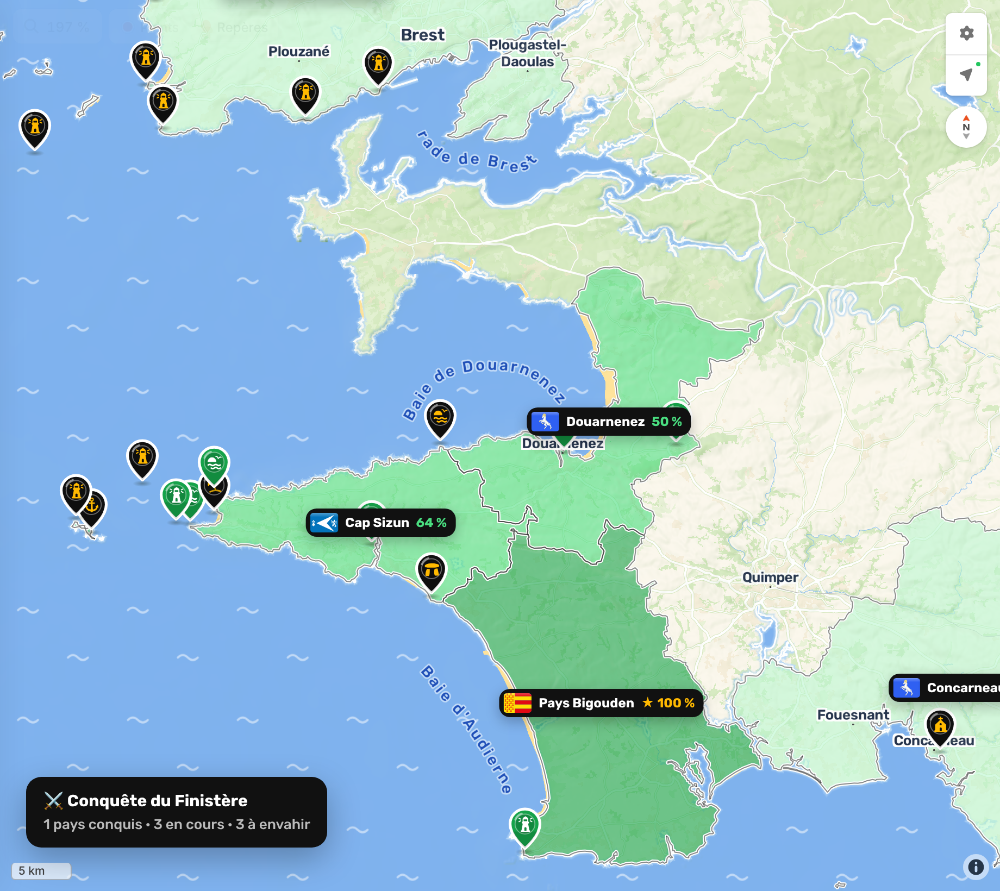
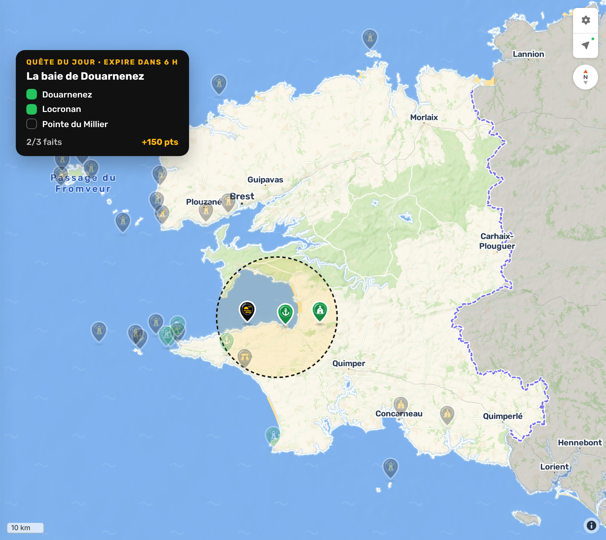
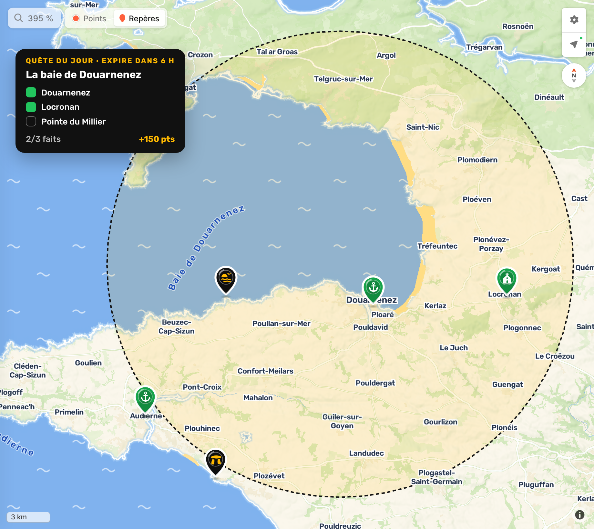
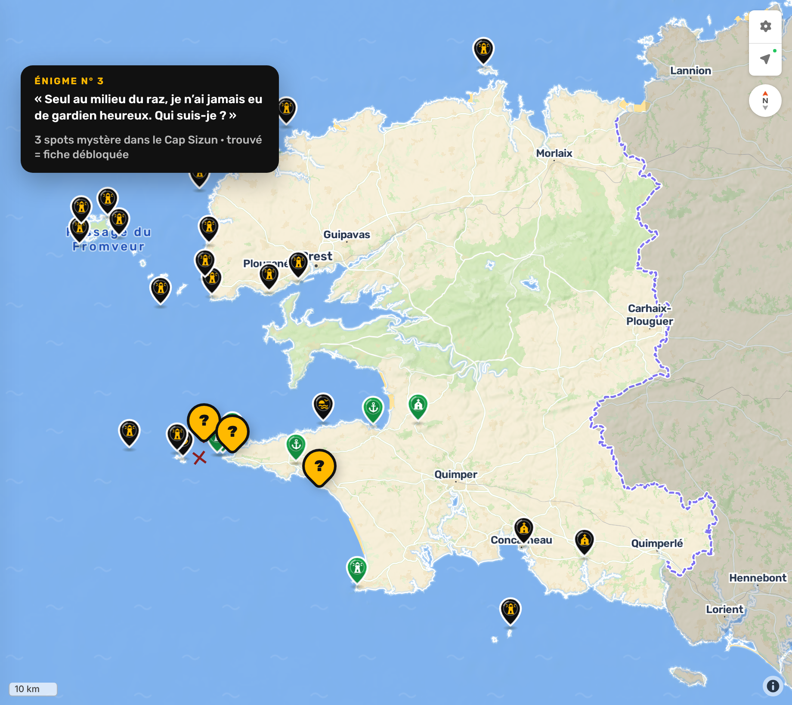
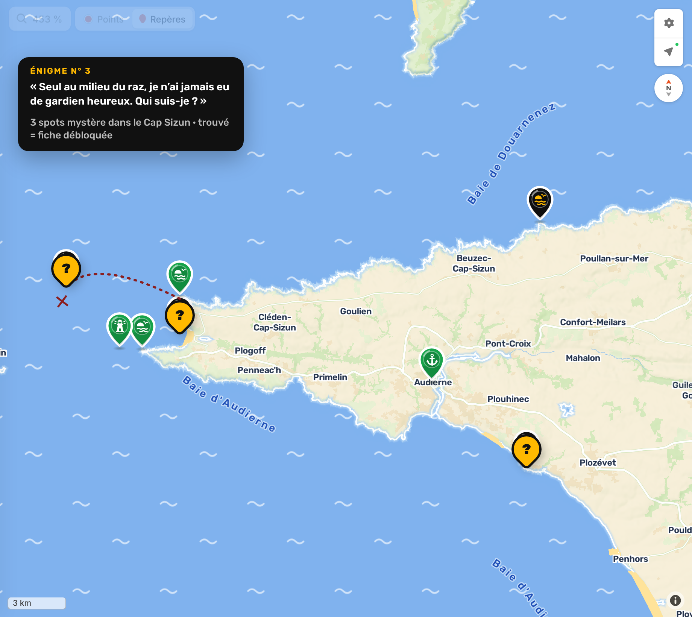
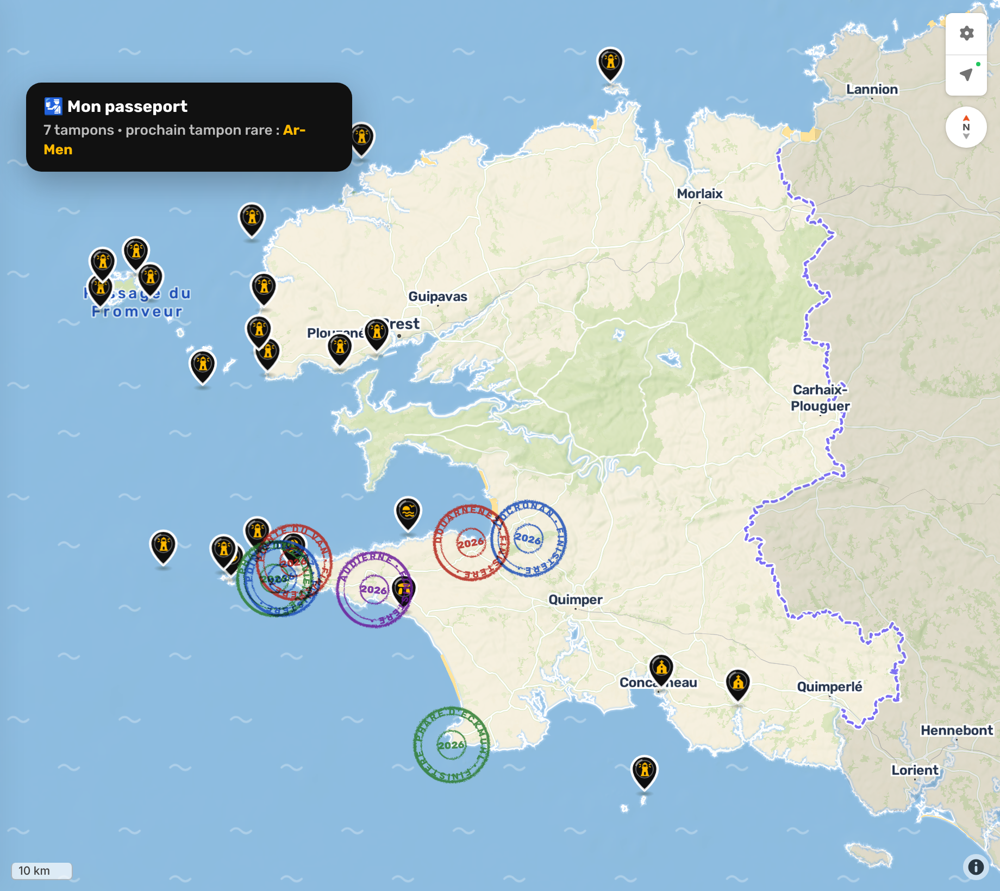
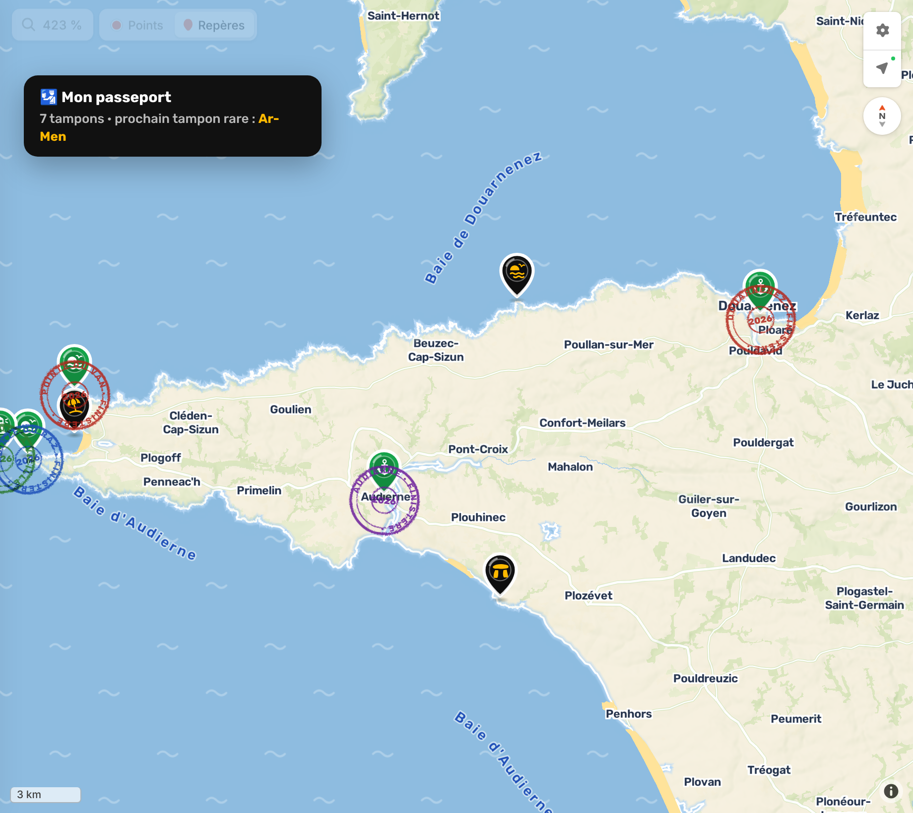
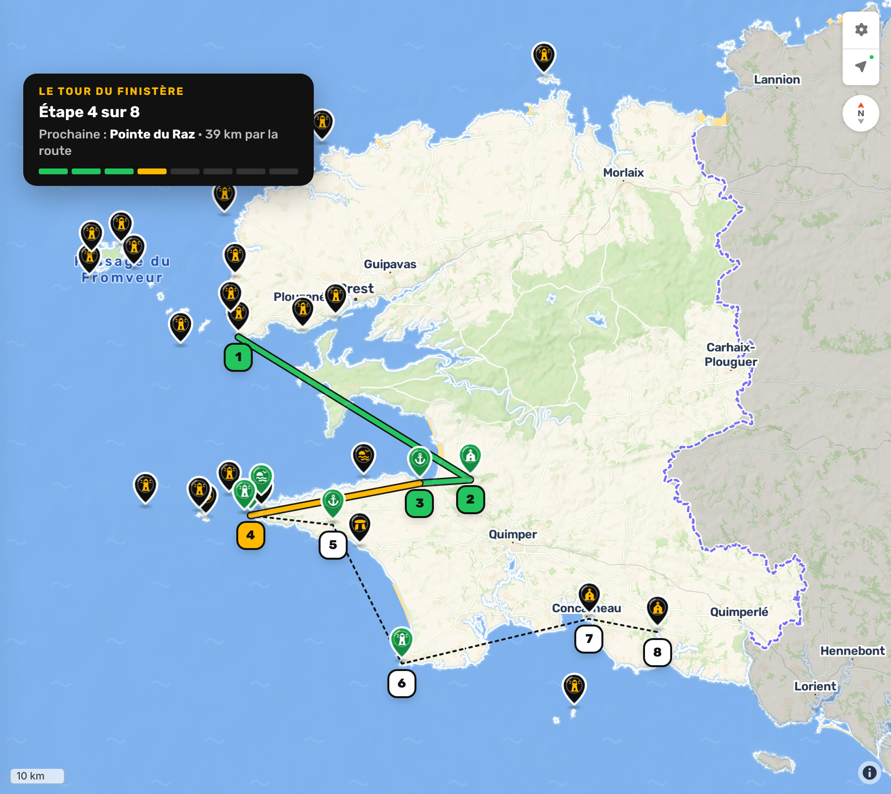
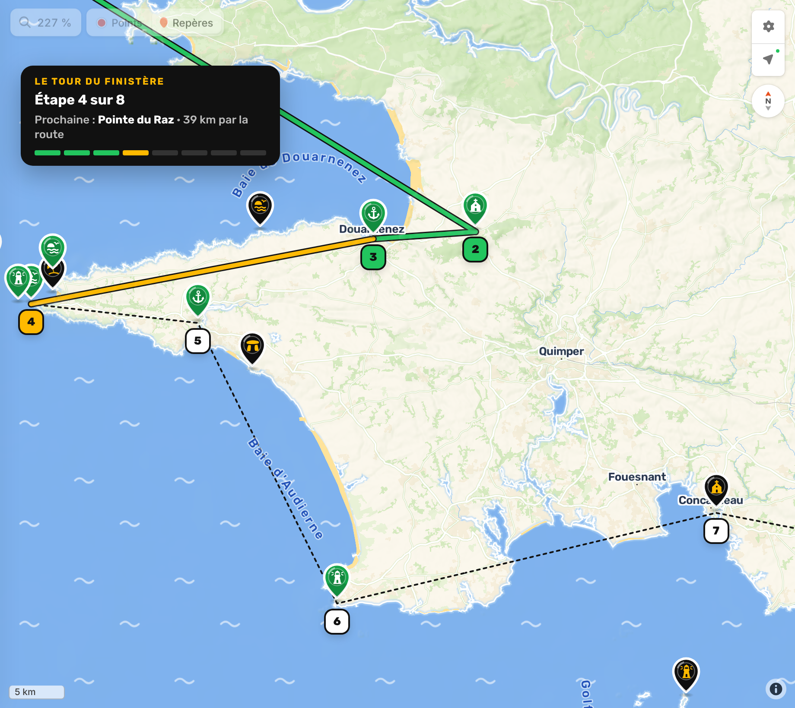

1. La nuit des phares (filtre « Phare »)
S’active quand on choisit le filtre Phare : la carte passe de nuit, chaque phare balaie la mer de ses faisceaux, ceux déjà visités brillent plus fort.
2. Carte illustrée façon BD d’aventure
Le pastel « jeu mobile » poussé vers l’album illustré : contours encrés, forêts dessinées, mer à vaguelettes, bannière, bateau et serpent de mer.
3. Terres découvertes
Le brouillard revu : tout reste visible, mais en noir et blanc. Chaque lieu visité redonne ses couleurs à la région autour de lui.
4. Noir & jaune, version 2
Mer noire profonde à reflets, terre ivoire, côte jaune fine, voisins hachurés, grandes villes en capitales : l’identité GuideMe, plus fine.
5. Mini-jeu : la route des phares
Un parcours numéroté relie les 19 phares le long de la côte. Chaque phare visité s’allume, le compteur suit la progression.
6. Mini-jeu : conquête des pays
Chaque pays se colore selon le pourcentage de lieux visités, façon jeu de stratégie, avec son drapeau et son score (valeurs d’exemple).


7. Mini-jeu : la quête du jour
Une zone de quête est mise en avant (ici la baie de Douarnenez) : 3 spots à faire, des points à gagner, les autres lieux s’estompent.


8. Mini-jeu : chasse au trésor
Certains spots sont cachés derrière un « ? » : une énigme guide vers eux, un pointillé part du dernier lieu visité. Trouvé = fiche débloquée.


9. Mini-jeu : passeport à tampons
Chaque lieu visité laisse un tampon encré sur la carte, comme dans un passeport de voyage. La carte devient le souvenir du joueur.


10. Mini-jeu : le Tour du Finistère
Un itinéraire en 8 étapes à travers le département : étapes faites en vert, prochaine étape en jaune avec la distance, la suite en pointillé.

